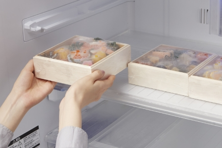

1
手元に届いた冷凍おせちは、お召し上がりになるまで冷凍庫で静かに保管してください。

2
お召し上がりの際は、お重を一段ごとに分け、ラップをかけて冷蔵庫で解凍してください。
3
冷蔵庫で解凍時間が過ぎたら、食材をラップの上から触って確実に解凍されているか確かめてください。
4
１〜2時間前に冷蔵庫から出して室内に置き、常温にすることでよりおいしくお召し上がりいただけます。
「おせち料理」 意味と由来
どうしておせちを食べるようになったの？まずは由来を知ることからはじめましょう。
おせちが一般的になったのは江戸時代から
おせちは中国から季節の節目を祝い神々を祀る五節供の行事として伝わりました。 奈良時代には宮中行事として確立し、
この行事の宴会で食べられた食事を「御節供」と言いました。この「御節供」がおせちの語源と言われています。
それまで宮中行事でしかなかった御節供が庶民に広まったのは江戸時代。幕府が公式行事として節日を制定した頃、季節の節目を祝い、神々を祀る節日に食べられるようになります。のちに最も大切とされる年の初めの節日に食べられるものだけを「おせち」と呼ぶようになりました。
※節日（節句）とは、1月1日元日、1月7日人日の節句、3月3日上巳の節句、 5月5日端午の節句、7月7日七夕の節句、9月9日重陽の節句など。
おめでたい意味やいわれ
新年を迎える大切な正月の節句の日に神様に振る舞う御節料理には、 五穀豊穣、家内安全、子孫繁栄、不老長寿、などの意味を込めた山の幸、海の幸を贅沢に盛り込みます。それぞれの料理には年初めに食べるべき理由や意味が込められています。
黒豆
黒く日焼けするほどマメに勤勉に働けるよう願う縁起物です。
数の子
数の子は、卵の数が多い事から子孫繁栄を願う縁起物です。
田作り（ごまめ）
黒く日焼けするほどマメに勤勉に働けるよう願う縁起物です。
紅白かまぼこ
形状が初日の出の形に似る事から用いられ、赤色は魔除け、白色は清浄を意味しています。
伊達巻
形が巻物に似ている事から知識が増えるようにという願いが込められています。
きんとん
漢字で金団と書く事から、金色の団子という意味で金銀財宝を意味し金運を呼ぶ縁起物です。
紅白なます
大根と人参を酢付けしたなますは、水引をかたどっているとされ平安を願う縁起物です。
昆布
昆布は「よろこぶ」の語呂合わせで、縁起物とされています。
海老
曲がった腰と長いひげから長生きしている老人を彷彿させるため、長寿の願いをこめておせちに加えられています。